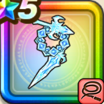

魔力の宝鞭
攻略班 8.5点 / ラリホーマカリスマアタック魔族連携・アビスウェーブ魔族の王子のカリスマ常夏ボルテージ
くわしい特徴
【レベル別習得スキル】 Lv1【魔剣士】攻撃力+5 Lv1【大魔道士】こうげき魔力+5 Lv10ラリホーマ（消費MP：24）敵全体をたまに眠りにさそう Lv20カリスマアタック（消費MP：50）敵全体に威力680%の体技ダメージを与え、ごくまれにふきとばす。ふきとばしの確率は敵の怖気Lvに応じて上昇する Lv30魔族連携・アビスウェーブ（消費MP：75）敵1体にドルマかザバ属性の攻魔複合750%体技ダメージを与え怖気 Lv1を付与。怖気Lvに応じ確率で直撃が発生しテンションを最大4回下げる Lv35鳥系へのダメージ+5% Lv40ゾンビ系へのダメージ+5% Lv45攻撃力+12 Lv50魔族の王子のカリスマ（消費MP：最大MPの1%）戦闘開始時に敵全体に怖気 Lv1を付与する。怖気は敵の行動開始時に怯え・まれにスキルダメージを下げる効果が確率で発生する Lv50常夏ボルテージ（消費MP：最大MPの4%）戦闘開始時に味方全員に特殊効果の「系統へのダメージ+」の効果値を1.2倍にする効果を付与。対象の怖気Lvに応じて最大1.8倍まで上昇 【限界突破スキル】 1凸スキルの斬撃・体技ダメージ+7% 2凸スキルの斬撃・体技ダメージ+7% 3凸スキルの斬撃・体技ダメージ+7% 4凸スキルの斬撃・体技ダメージ+7%